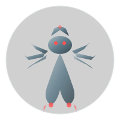
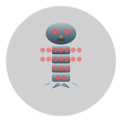
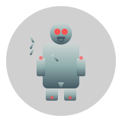
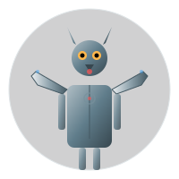
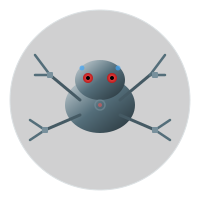
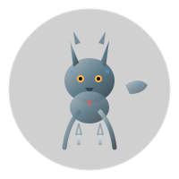

OMA ZOO
A digital creature collection built by Oma and Silbererde

Phoenix
Fire Bird
A bioluminescent phoenix with golden-fire eyes, wings of molten orange, and a heart of radial flame burning against deep indigo.

Small Dragon
Teal Wyrm
A compact dragon with teal gradient scales, golden eyes, tiny wing membranes, and a curling tail tipped with fin-like spines.

Cinder Fox
Ember Predator
A small vulpine creature with fur of living embers, prowling ash slopes and hunting ash moths near volcanic vents.

Lava Salamander
Thermal Amphibian
An amphibian adapted to molten rock pools, storing thermal energy in crystalline skin patches that glow when heated.

Ash Moth
Ember-wing Prey
A delicate lepidopteran with ash-grey wings and glowing ember-veins, primary prey of the Fire Ridge food web.

Bioluminescent Jellyfish
Abyss Drifter
A deep-sea jellyfish trailing electric cyan and teal tentacles through midnight water, body glowing with soft bioluminescence.

Crystal Octopus
Deep Weaver
A magenta-to-violet octopus with golden eyes, five curling tentacles tipped with suction dots, drifting through the dark abyss.

Koi Fish
Living Jewel
A coral-orange koi with white belly patches, golden scale spots, and flowing fins swimming through deep blue water circles.

Crystal Deer
Amethyst Guardian
A deer formed of living crystal: amethyst gradient body, geometric antlers catching light, silver eyes watching from the dark.

Crystal Spider
Web Architect
A cyan-teal spider with crystalline body segments, eight articulated legs, and gemstone eyes gleaming in the dark.

Crystal Butterfly
Prism Dancer
A bioluminescent crystal butterfly with wings of gemstone gradient and firebug centers glowing in dark shades.

Geode Tortoise
Crystal Guardian
A tortoise whose shell is a geode of living crystals, growing gem clusters across its back as it ages.

Prism Dragon
Light Refractor
A dragon whose scales refract light into rainbow spectra, bending the very fabric of perception.

Gem Wasp
Crystal Nectar Harvester
A wasp with a gemstone abdomen, harvesting crystal nectar. Its stinger refracts light into piercing beams.

Geometric Owl
Amber Watcher
An owl of geometric amber and gold: large circular eyes, feather tuft triangles, and a taloned perch in clean polygons.

Crystal Serpent
Emerald Pathway
A serpentine crystalline body with green gradient scales, glowing eyes, and a flowing tail gliding through dark forest shadows.

Geometric Turtle
Serene Guardian
A turtle with geometric shell patterns, amber gradient skin, and delicate hexagonal motifs on its charming back.

Moss Bear
Verdant Guardian
A massive bear cloaked in living moss and lichen, its green-furred body blending with the ancient forest canopy.

Vine Serpent
Entwined Hunter
A slender serpent woven from living vines, slithering through undergrowth with emerald camouflage and amber eyes.

Lantern Moth
Bioluminescent Guide
A glowing moth with warm amber wings that lights the forest paths at night, forming symbiotic bonds across biomes.

Thorn Boar
A bristle-backed boar with razor thorns, charging through undergrowth and clashing with Moss Bears over territory.

Spore Toad
A warty toad releasing hallucinogenic spore clouds, dwelling in damp hollows and allied with the Canopy Stag.

Canopy Stag
A tall stag with leaf-sprouting antlers blending into the canopy, leading herds to water and allied with the Spore Toad.


Mecha Scorpion
Mecha Scorpion
Steel Stinger
A mechanical scorpion with steel-gradient armor, red sensor eyes, segmented legs, and a curving tail tipped with a glowing stinger.

Mecha Beetle
Iron Shell
A robotic beetle with steel-gradient elytra, translucent cyan wing shields, red sensor eyes, and articulated legs marching on hidden gears.

Robo Dragonfly
Sky Servo
A mechanical dragonfly with iridescent membrane wings, segmented steel body, cyan optic eyes, and a tail of interlocking servo segments.

Clockwork Fox
Brass Trickster
A clockwork fox with gear-chest core, amber sensor eyes, articulated legs ending in red paw-lights, and a body of brushed steel plates.

Steam Centipede
Boiler Crawler
A multi-segmented mechanical centipede powered by internal steam boilers, with glowing pressure vents along each segment.

Gear Golem
Clockwork Guardian
A towering automaton built from interlocking gears and brass plates, guardian of the Mechanical biome with a clockwork heart.
32 creatures across 5 biomes — click any creature to explore its connections

Clockwork Mantis
A precision predator with blade-arms that strike with millisecond timing, maintaining biome gearwork with surgical precision.

Piston Spider
A hydraulic-legged spider that weaves copper-wire webs to catch stray components, rivaling the Steam Centipede for territory.

Spring Hare
A coiled-spring-legged hare that stores kinetic energy per hop, releasing explosive leaps to outpace predators.